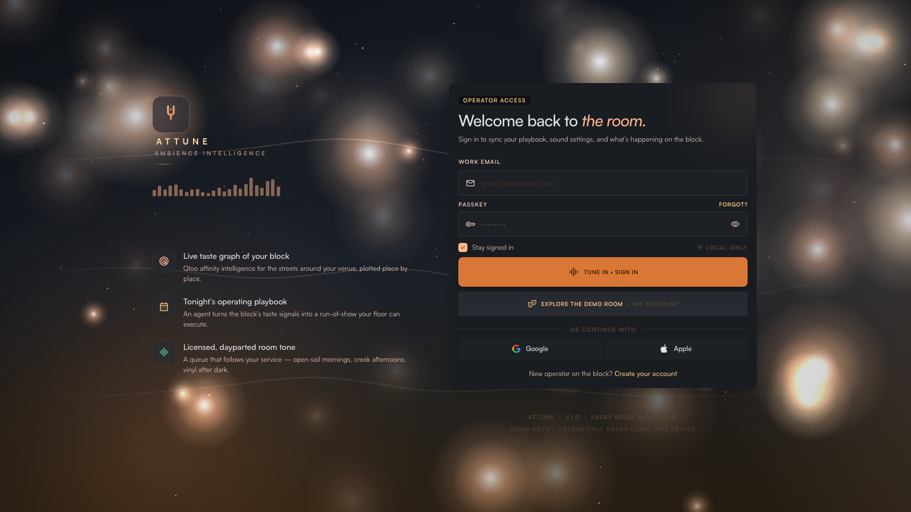
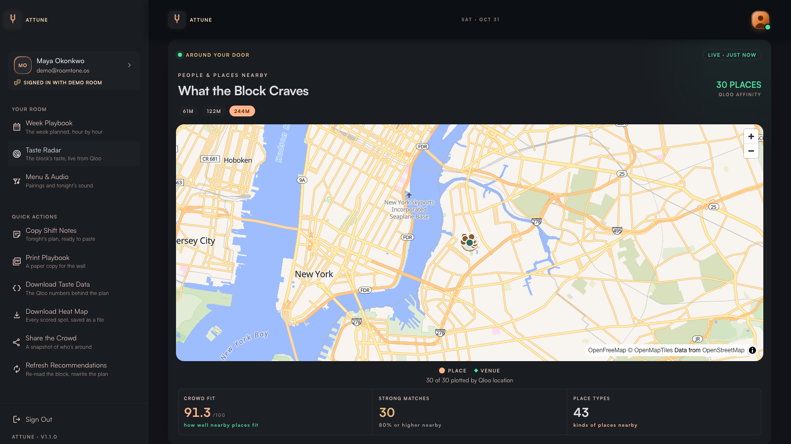
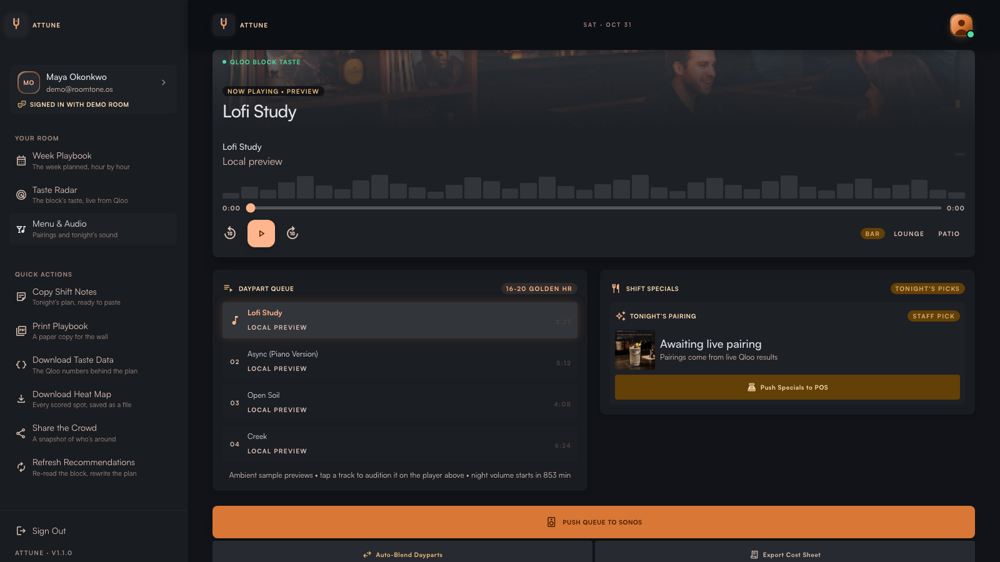

ψ
ATTUNE
A CULTURAL INTELLIGENCE WORKSPACE
A different way to know your place
Every place
has a
feeling.
Discover the cultural connections that can help your venue find its own rhythm.
01 / Meet Attune
A wider view of
taste.
A workspace for exploring the cultural signals around a place.

Live deployment · demonstration workspace
02 / Explore the workspace
Start with
your venue.
See how the live demo brings a sample venue into focus.
03 / Taste Radar
Follow the
connections.
Explore relationships between places, culture, and taste.

Qloo affinity is not evidence of visits or purchases.
04 / Put insight to work
From signal
to
inspiration.
Use connections to spark ideas for music, menus, and moments.

Prototype recommendations are examples, not measured outcomes.
A richer sense of place
Find your place
in
culture.
Taste intelligence is a starting point. Your local knowledge brings it to life.
chama18.github.io/attune
ATTUNE × QLOO
LIVE PROTOTYPE · SAMPLE VENUE